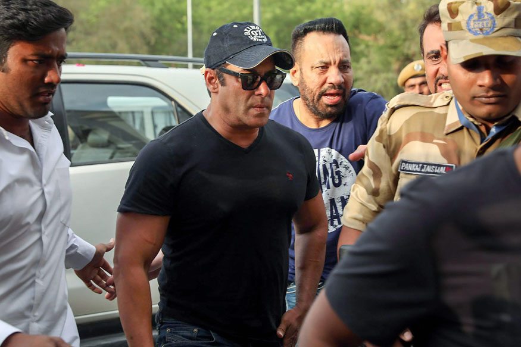
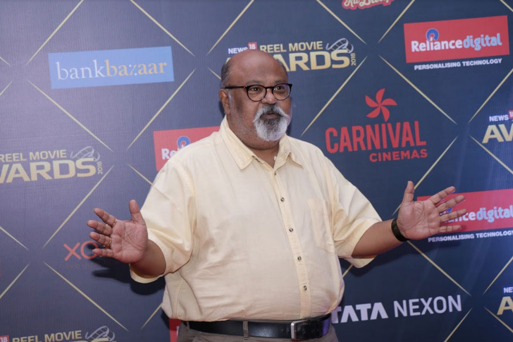
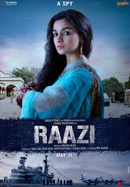
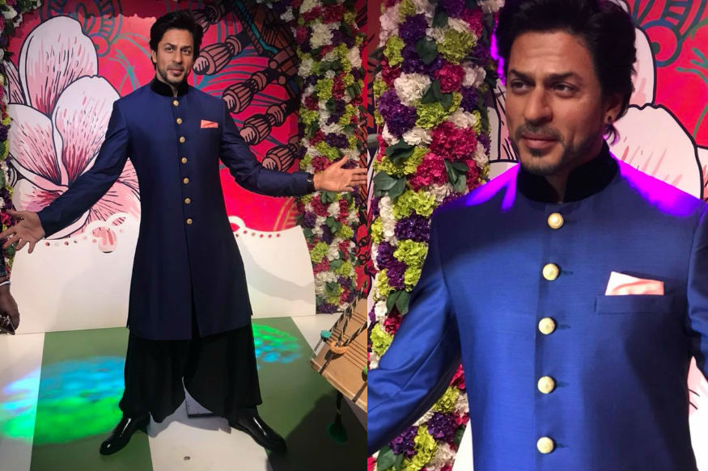
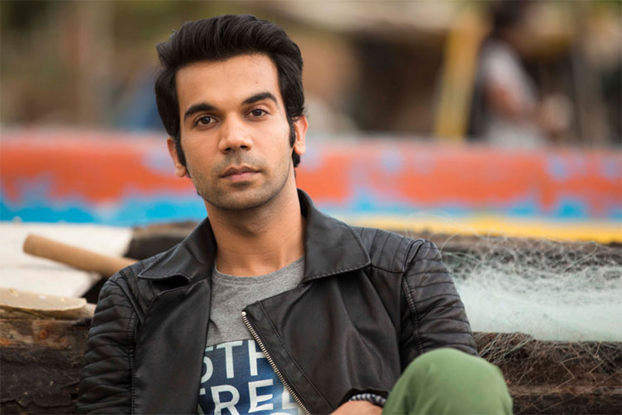
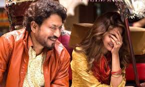

News About Bollywood

Owing to his exalted status and the kind of money invested over him, Salman, 52, invariably stands out as the numero uno among those who have grappled with the law, police and courts Bollywood superstar Salman Khan, slapped with a five-year jail term for the Rajasthan Blackbuck killing case more..

A Daas Dev rap song was released on Monday as an introduction to the world of the film's main story. It is rapped by director Sudhir Mishra, and features Saurabh.s" and "Hamlet".
A "Daas Dev" rap song was released on Monday as an introduction to the world of the film's main story. It is rapped by director Sudhir Mishra, and features Saurabh more...

By the looks of it, Alia Bhatt completely steals the show with an intense and held performance. Is it another award-winning role for the actor? After teasing the fans with different shades of Alia Bhatt's character, the makers of Raazi have finally released the trailer of the film and the wait was worth it more....

'It is strange that an industry like Bollywood that is so obsessed with appearances doesn't care that by supporting Khan, they are appearing to be supporting a criminal.Salman Khan is India's favorite macho mard. Often touted as a man with a big heart, Khan is the gym-trainer and acting coach of lesser Bollywood more...

Shah Rukh Khan's new figure will be showcased beside other iconic celebrities in a special interactive and entertaining themed zone at Madame Tussauds Delhi.
Badshah of Bollywood Shah Rukh Khan's wax figure was unveiled at Madame Tussauds more...

There have been a few reports doing the rounds that Rajkummar is apparently no more interested in playing the second lead in films.Rajkummar Rao is undoubtedly one of the most credible and talented actors in the industry.more...

While speaking at the red carpet event of the first edition of News18 Reel Movie Awards, where Irrfan bagged the best actor award for his flawless performance in "Hindi Medium", many celebs extended their well-wishes to the star.